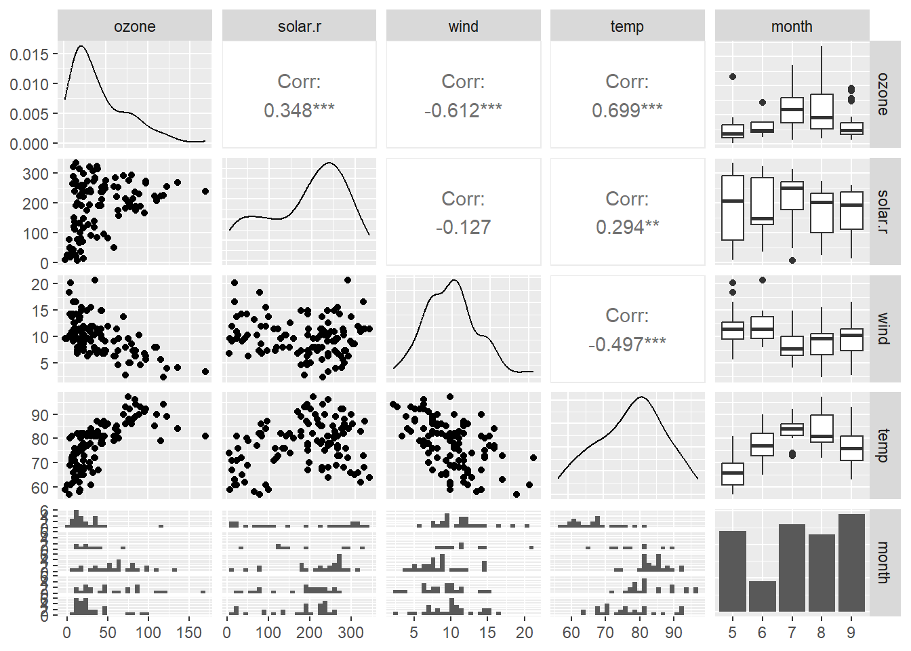

library(tidyverse)
library(dplyr)
library(GGally)ZAD 1 - tidyverse
Opracuj model prognoz O3 na podstawie zestawu danych airquality. Następnie wykonaj prognozę dla dowolnego zestawu danych. sprawdzić czy miesiące mają wpływ na prognozę. Usuń braki danych. Zastanów się jak przekształcić zmienne. Nie uwzględniaj zmiennej day w prognozach. Nie uwzględniaj interakcji między zmiennymi. W celu podglądnięcia danych zastosuj funkcje pakietu gggally. Zastosuj tylko metodę najmniejszych kwadratów. Zacznij od przygotowania danych, zastanów się co tu robimy. Opisz w komentarzach poszczególne kroki korzystając z systemu pomocy R.
Realizację zadania rozpoczynamy od załadowania potrzebnych bibliotek.
Wprowadzamy dane bazowe, które przetwarzamy w sposób ułatwiający ich dalszą konwersje.
colnames(airquality) <- tolower(colnames(airquality))
air <-
airquality |>
as_tibble() |>
na.omit() |>
select(-day) |>
mutate(month = factor(month))
head(air)# A tibble: 6 × 5
ozone solar.r wind temp month
<int> <int> <dbl> <int> <fct>
1 41 190 7.4 67 5
2 36 118 8 72 5
3 12 149 12.6 74 5
4 18 313 11.5 62 5
5 23 299 8.6 65 5
6 19 99 13.8 59 5 Wizualizujemy zależności pomiędzy zmiennymi.
ggpairs(air)
Skalujemy zmienne temp, wind, solar.r.
Obserwujemy przekształcone dane.
air_scaled <- air |>
mutate(across(c(temp, wind, solar.r), scale))
head(air_scaled)# A tibble: 6 × 5
ozone solar.r[,1] wind[,1] temp[,1] month
<int> <dbl> <dbl> <dbl> <fct>
1 41 0.0570 -0.714 -1.13 5
2 36 -0.733 -0.545 -0.608 5
3 12 -0.393 0.748 -0.398 5
4 18 1.41 0.439 -1.66 5
5 23 1.25 -0.377 -1.34 5
6 19 -0.941 1.09 -1.97 5 Budujemy model regresji liniowej na podstawie przeskalowanych zmiennych.
model <- lm(ozone ~ temp + wind + solar.r + month, data = air_scaled)Wyświetlamy podsumowanie modelu.
summary(model)
Call:
lm(formula = ozone ~ temp + wind + solar.r + month, data = air_scaled)
Residuals:
Min 1Q Median 3Q Max
-40.344 -13.495 -3.165 10.399 92.689
Coefficients:
Estimate Std. Error t value Pr(>|t|)
(Intercept) 50.386 5.511 9.142 5.95e-15 ***
temp 17.870 3.247 5.503 2.74e-07 ***
wind -11.060 2.348 -4.710 7.78e-06 ***
solar.r 4.760 2.157 2.206 0.0296 *
month6 -14.759 9.123 -1.618 0.1088
month7 -8.749 7.829 -1.117 0.2664
month8 -4.197 8.147 -0.515 0.6076
month9 -15.967 6.656 -2.399 0.0182 *
---
Signif. codes: 0 '***' 0.001 '**' 0.01 '*' 0.05 '.' 0.1 ' ' 1
Residual standard error: 20.72 on 103 degrees of freedom
Multiple R-squared: 0.6369, Adjusted R-squared: 0.6122
F-statistic: 25.81 on 7 and 103 DF, p-value: < 2.2e-16Na podstawie opracowanego modelu prognozujemy nowe dane.
predictions <- predict(model, newdata = air_scaled)
head(predictions) 1 2 3 4 5 6
38.314979 42.065425 33.134370 22.616792 36.526326 -1.333782